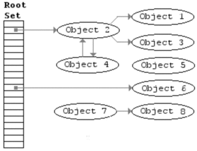
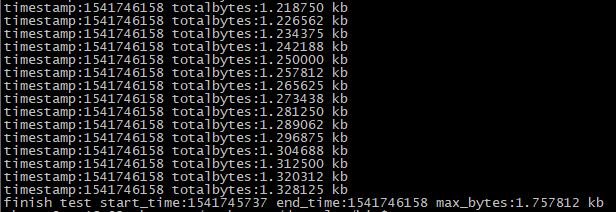

前言
上一篇我已经设计和实现了Lua解释器最基础的基本数据结构，实现了纯C函数在栈中的调用流程，以及保护模式调用函数等内容，今天要介绍的则是Lua解释器的GC基础架构。Garbage Collection机制，可能是让人们听之不寒而栗的机制，都说GC很复杂，需要花费大量时间去消化和理解，那为什么要在本系列的第2篇就早早引入？做这个决定并非一时冲动之举，而是经过思考后而决定的。之前在阅读了云风大神翻译的《编程之魂》第7章[1]，这篇关于对Lua设计者的访谈记录中，作者有这么说过：
Roberto：Lua 从第一天开始，就一直使用垃圾收集器。我想说，对于一种解释型语言来讲，垃圾收集器可以比引用计数更加紧凑和健壮，更不用说它没有把垃圾丢得到处都是。考虑到解释型语言通常已经有自描述数据（通过给值加上标签之类的东西），一个简单的标记清除（mark-and-sweep）收集器实现起来极其简单，而且几乎对解释器其余的部分不会产生什么影响。
从作者的话语中，可以大约了解到，GC机制不是后来加进去的，而是在设计之初，就通盘考虑进去的。而且mark and sweep算法并不是一个很难的算法，甚至可以说的上是比较简单的，它的难在于和lua本身的其他部分结合。事实上gc机制可以单独剥离，在不和lua那些复杂的数据结构（如TString和Table等）结合的情况下，单独设计出来，并且测试，一套基于Incremental Mark and Sweep算法的Garbage Collection基础架构也只有短短300多行，只包含基础功能和设计的gc机制，有利于我阐述解释和说明，因此在这个阶段引入gc机制是最好不过的了，后面在设计和实现其他功能模块的时候，会逐步在今天建立的gc框架下不断完善相关细节。今天所做的则是对搭建这样一套基础gc框架的梳理总结，项目源码地址在这里，欢迎大家star。
本篇将从传统的最简单的Naive Mark and Sweep算法开始介绍，然后介绍其改进版Incremental Mark and Sweep算法，最后介绍gc基础架构的代码实现和测试用例。
Naive Mark and Sweep算法
原理探索
现在我们进入到Mark and Sweep最初原型的探索阶段，在了解该算法的阶段，我参阅了很多资料，其中言简意赅的则是维基百科的Tracing garbage collection词条[2]。在开始阐述具体算法流程之前，首先我们要先梳理若干个点：
- 所有新创建的对象，都要被放入一个单向链表中(我们姑且称之为allgc链表)，新创建的对象实例，直接放置于列表头部。
- 所有被创建的实例，均分为可达和不可达状态，可达意味着它正在被使用，或者有潜在被使用的可能，那么global变量，在栈中的变量以及在寄存器中的变量以及被这些变量引用的变量则被视为可达的[3]。
GC则是以全局变量，栈和寄存器作为起点开始标记的。
为了方便探索算法的本质，我们就以栈作为标记的起点，来探索Mark and Sweep算法：GC开始前，新创建的对象均放置于allgc链表中
- GC开始，进入标记阶段，从起始点（如栈）开始，标记所有被关联到的对象
标记结束后，进入清除阶段，所有未被标记的实例将被释放，而被标记的对象则清除标记，本次gc结束
流程很简单，不过需要注意的是，以上步骤只能一步到位执行完，如果步骤可拆分，那么在标记阶段结束之后，新创建的实例，在本轮gc中将无法继续被标记，因此在清除阶段，这个新创建而可能会被使用到的对象将被清除掉，导致不可挽回的bug。虽然算法本身并不复杂，这里还是希望通过一个图文举例说明，以使我们的表述更加直观：
如图1所示，在gc开始之前，我们现在创建5个object，他们全部被放在allgc列表中，其中object3被object1引用到，object4被global table引用到，object1、object2、object4和object5均被入栈。

- 在GC开始之前，object5和object4被出栈，于是得到如图2的结果：

- GC开始，进入标记阶段，以stack和global table作为起始点，被标记的对象用蓝色边框表示，其中object1和object2直接被引用，则它们需要被标记，object3虽然既不在stack中，也不在global table中，但是它被object1引用，因此也会被标记，而object4因为被global table引用，所以也会被标记，只有object5既不在stack中，也不在global table中，也没有在被标记的object引用它，因此它不会被标记，这一切都展示在图3中：

- 在标记阶段结束后，则进入清除阶段，Mark and Sweep算法会遍历allgc列表，如果链表中的object被标记，则清除标记，否则释放它，在本例中，object5被清除。最终我们得到如图4所示的结果：

现在通过wikipedia上的一张gif图，动态展示这个流程
https://en.wikipedia.org/wiki/Tracing_garbage_collection
优点与缺点
我们已经详细探讨了Mark and Sweep基本算法的原理，他的优点和缺点都很明显。优点是足够简单，易于理解，缺点则是它必须一步到位执行完，本质就是stop the world的gc机制，至于为什么需要stop the world，前面也有提到过，这里不再赘述。总的来说，如果一门语言，要作为独立的编程语言，这种算法显得too young，too simple，有时还naive。为了解决这个问题，一种新的改进版的Mark and Sweep机制应运而生，他就是Incremental Mark and Sweep机制。
Incremental Mark and Sweep算法
Naive Mark and Sweep算法的劣势在于，一步到位的执行，会在瞬时极大影响程序运行的性能，为了解决这个问题，就必须要允许gc能够分n次执行，每次只执行其中的一小部分，将gc的性能开销均摊掉。基于这样的现实需求，传统的Mark and Sweep算法，只对对象标记表示不可清除，不标记表示可清除这种方式就显得不合时宜了，如果gc要分步骤执行，我们需要一种方式去记录标记的进度，需要一种方式灵活处理不断变化的对象之间的引用关系，为此，Incremental Mark and Sweep算法增加了几种颜色，以及一些新的列表来处理这样的情况，本节首先会介绍颜色的概念，然后再通过伪代码展示gc处理的过程，最后再通过图文例子，直观展示这样一个流程是怎样运作的。
首先我们要介绍的是几种颜色，在Incremental Mark and Sweep算法中，每一轮gc处理中一共有3种颜色参与处理，分别是白色，灰色和黑色。每个新创建的对象，将被标记为白色，而几乎所有的对象，gc的过程中大致要经历被标记和扫描两个阶段，标记阶段会将对象从白色标记为灰色，并放入一个专门放灰色对象的单向链表–gray列表中，这相当于记录了当前gc扫描的进度。然后就是gc对gray链表中的对象，一个一个进行扫描，扫描的过程就是将原本被标记为灰色的对象，标记为黑色，并遍历其所有引用的对象，将它们标记为灰色，并放入gray列表中，以等待下一次扫描。如此循环往复，当gray链表为空时，意味着本轮gc标记阶段结束，此时仍然为白色的实例，意味着它已经不可达，需要被清理，而黑色的则意味对象可达，不能被清除。
这里需要注意的一点是，虽然多数对象，经历标记阶段的时候，是从白色标记为灰色，但对于那种不可能引用其他对象的数据类型（如lua的string类型）是被直接被标记为黑色的。此外lua5.3中的gc，白色有两种，一种是白色，还有一种是另一种白（otherwhite），这两种白色用于不同gc轮回之间的乒乓切换，比如，如果当前gc轮是white0作为白色标记，那么在扫描阶段结束后，新创建的对象就会以white1标记，这样在清除阶段的时候，就只清除被标记为white0的白色对象，而下一轮gc则刚好反过来。
在介绍完gc的基本颜色以后，我们现在来看看gc过程的伪代码：1
2
3
4
5
6
7
8
9
10
11
12
13
14
15
16
17
18
19
20
21
22
23
24
25
26
27
28
29
30
31
32
33
34
35
36
37
38
39
40
41
42
43
44
45
46
47
48
49
50
51
52
53
54
55
56
57
58
59
60
61
62
63
64
65
66
67
68
69
70
71
72
73
74
75
76
77
78
79
80function single_step()
switch(gcstate) {
case restart: {
white2gray(mainthread); // mainthread是lua的主线程变量，他本质是一个lua_State类型的变量，
// gc的起始点stack也包含在这个结构里
push mainthread to gray;
white2gray(global_table);
push global_table to gray;
gcstate = propagate;
} break;
case propagate: {
traverse_bytes = 0;
while (true) {
if (gray is empty) {
gcstate = atomic;
break;
}
object = pop from gray;
gray2black(object);
foreach (ref in object) {
white2gray(ref);
push ref to gray;
}
traverse_bytes += object sizes;
if (traverse_bytes >= per step max traverse bytes) {
break;
}
}
} break;
case atomic: {
foreach(object in grayagain) {
gray2black(object);
foreach(ref in object) {
white2gray(ref);
push ref to gray;
}
}
while (gray is not empty) {
object = pop from gray;
gray2black(object);
foreach(ref in object) {
white2gray(ref);
push ref to gray;
}
}
change white to otherwhite; // 将白色切换为另一种白
sweepgco = head of allgc;
gcstate = sweepgc;
} break;
case sweep: {
count = 0;
foreach(sweepgco is exist) {
next_gc_object = sweepgco->next;
if (sweepgco is dead) { // 只有白色为本次gc标记的白色，才算是dead，otherwhite是下次gc用的白色
free sweepgco
}
else {
set sweepgco to white;
}
sweepgco = next_gc_object;
count ++;
if (count >= per step foreach count) {
break;
}
}
if (sweepgco is not exist) {
gcstate = restart;
}
} break;
default: break;
}
end
上面这段伪代码，是每次执行gc时，会执行的主要流程，这里先展示伪代码的目的，是为了让大家先建立直观的感觉，然后再辅以文字说明，能够达到更好的效果。
从上述伪代码，我们可以知道，整个gc执行的过程中，大致要经历几个阶段（实际编码时，状态并不止这些，但是为了捋清gc机制的主要流程，这些步骤基本是最核心的步骤了），他们分别是restart阶段、propagate阶段、atomic阶段和sweep阶段，现在分别对这些不同的阶段进行说明：
- restart阶段：在lua中，包含stack变量的mainthread和global_table都是要被gc关注的对象，我们已经讨论过，gc的起始点是globals、stack和register，register在lua的gc中，并没有特别的意义，因为所有的操作都是在stack上进行的。因为mainthread和global_table包含gc起始点，因此他们要先push入gray列表中。并且标记他们为灰色，这些操作结束后，就进入到了propagate阶段。
propagate阶段：从伪代码我们可以看到，propagate阶段所做的事情，就是不断从gray列表中pop出object，然后把它从灰色变为黑色，再遍历它所有引用的对象，并将其push到gray列表中。同时我们也要注意到，每次将一个从gray列表中pop出来的object，标记为黑色后，需要累计这个object的字节大小，当这一次gc，propagate(也就是扫描)的对象累计超过一定的字节数时，本轮gc会被暂停，等待下一次gc开始后，继续propagate gray列表中的对象。到这里，我们可以初步感受到，什么是步进式地进行gc处理，其实就是每次处理一部分，将gc处理的瞬时开销，均摊开来。当我们的gray列表为空时，意味着所有的gray列表均已propagate完毕，然后进入atomic阶段。
atomic阶段：和propagate阶段不同，atomic阶段是需要被原子执行的，也就是说进入到这个阶段，就得不中断地重头执行到阶段结束。之所以要这么做，需要花费一些功夫来进行解释和说明。
首先，因为我们的gc在propagate阶段是可以被中断的，也就是说，在中断的过程中，可能会有新的对象被创建，并且被已经被标记为黑色的对象引用，这种gc算法，是不能将黑色的对象，直接引用白色的对象的，因为黑色的对象已经标记和扫描完毕，本轮gc不会再进行扫描，这样被其引用的白色对象也不会被标记和扫描到，到了sweep阶段，因为新创建的对象未被标记和扫描，因此会被当做不可达的对象被清除掉，造成不可挽回的后果。 为此，我们需要为这种情况下，为新创建的对象设置barrier。barrier分为两种，一种是向前设置barrier，也就是直接将新创建的对象设置为灰色，并放入gray列表；还有一种则是向后设置barrier，这种是将黑色对象设置为灰色，然后放入grayagain列表。向前barrier的情况，适用于已被标记为黑色的对象类型，为不会频繁改变引用关系的数据类型，如lua的proto结构。而向后barrier的情况，适合被标记为黑色的对象类型，为会出现频繁改变引用关系情况的数据类型，如lua的table结构，也就是说，在两次调用gc功能的过程中，table中的同一个key，可能被赋值多个value，如果把这些value对象均标记为灰色，并放入gray列表，那么将会造成许多无谓的标记和扫描操作，因为这些value很可能不再被引用，需要被回收，因此，只要把已经被标记为黑色的table，重新设置为灰色，是避开这个性能问题的良好方式。
而如果我们直接把从黑色重新标记为灰色的table对象，放入gray列表的话，如上所述，table的key和value的引用关系变化频繁，这个table很可能在黑色和灰色之间来回切换，进行很多重复的扫描，为了提高效率，则将他放在grayagain列表中，在atomic阶段，一次性标记和扫描完。 为什么要原子执行atomic阶段？如果atomic阶段不能原子执行，那么就和propagate阶段没有区别了，table从黑色被标记为灰色，放入grayagain列表也失去了意义，因为如果不能原子执行，那么该table对象很可能前脚刚在grayagain列表中pop出来，由灰色变黑色，后脚又有新的对象被它引用，又将它从黑色变为灰色，因此避免不了一些table实例，在黑色和灰色之间来回切换，反复标记和扫描，浪费性能，很可能导致gc在标记和扫描阶段所处的时间过长，甚至无法进入sweep阶段，因此刚脆在atomic阶段设置为不可中断执行，一次完成所有的标记和扫描操作。这样，一个能够被频繁改变引用关系的table对象，最多在progapate阶段的时候被标记和扫描一次，在atomic阶段又被扫描一次，一共两次。
** 上述几个点，详细阐述了我们为什么需要有一个grayagain列表，为什么atomic阶段必须要原子执行，到现在为止我们梳理了来龙去脉，在atomic阶段结束以后，标记对象的白色会切换成另一种白，同时我们就进入到了sweep阶段。- sweep阶段：sweep阶段则很简单，每次我们执行这个流程，取出若干个对象，如果它已经是本轮gc要被清除的白色，那么它会被清除，如果不是，则标记为另一种白，以供下一次gc使用，当本轮gc涉及到的所有的对象清理和重置完毕后，进入下一轮gc。
整段伪代码和上述的文字，已经对Incremental Mark and Sweep算法进行了较为彻底的解释和说明了，为此在本小节的最后，附上维基百科词条上找的图片，动态演示这个过程：
wiki
{kind=link}
Garbage Collection基础架构逻辑实现
终于到了实现环节了，我们已经介绍了gc机制的原理，现在先从实现层面来看待gc接口的使用。对于外部而言，我们最希望的还是在创建对象以后，仅仅通过调用一个接口，就能使得gc运作，而不用关心它内部的逻辑实现，因此我们在使用层面可能类似如下代码所示的情况：1
2
3
4
5
6
7
8int j = 0;
for (; j < 500000000; j ++) {
TValue* o = luaL_index2addr(L, (j % ELEMENTNUM) + 1);
struct GCObject* gco = luaC_newobj(L, LUA_TSTRING, sizeof(TString));
o->value_.gc = gco;
o->tt_ = LUA_TSTRING;
luaC_checkgc(L);
}
正如上面的代码所示，我们所有的gc操作，都将在luaC_checkgc里完成。不过现在，我还不想展开其内部的所有细节，在开始论述细节之前，我们首先得了解gc的基本数据结构。
现在我们在vm目录下，新增luagc.h和luagc.c两个文件，现在目录变成下面展示的那样：1
2
3
4
5
6
7
8
9
10+ bin/
+ clib/
+ common/
+ compiler/
~ vm/
luado.h
luado.c
luagc.h
luagc.c
main.c
在lua中，受gc管理的数据类型主要有string、table、function、proto和lua_State，它们都需要有一个公共头部，由于lua是纯C实现的，因此，不能设置一个基类供这些类型继承，取而代之的是，通过一个宏来定义gc对象类型的公共部分，我将其定义在luaobject.h中，并以CommonHeader命名：1
2// luaobject.h
这个CommonHeader一共有3个字段，他们分别的意义是：
- next：在allgc链表中，指定下一个gc对象的指针
- tt_：记录gc对象的类型，不同的gc对象在propagate阶段有不同的处理逻辑
- marked：用来标记gc对象颜色用的
上一章节，我们定义了代表任何lua类型的Value类型，现在我们需要它也能表示gc类型，由于它是一个union类型，而gc的字段必须是整合在一起的，因此我们还需要定义一个结构GCObject，然后让Value类型包含这个GCObject：1
2
3
4
5
6
7
8
9
10
11
12
13// luaobject.h
struct GCObject {
CommonHeader;
};
typedef union lua_Value {
struct GCObject* gc;
void* p;
int b;
lua_Integer i;
lua_Number n;
lua_CFunction f;
} Value;
现在TValue也能表示被gc管理的对象类型了，到目前为止，具体的类型我们只实现了lua_State，现在需要在lua_State的头部加上这个CommonHeader的宏，限于篇幅，以及后面我们还需要往lua_State内添加其他gc相关的字段，这里就不展示代码了。
在我们编写解释器的过程中，经常会遇到Value类型和具体的类型（如lua_State）相互转换的情况，为了达到这个目的，我们需要设计一个union类型GCUnion来表示任何，需要被GC管理的数据类型，而它的定义如下：1
2
3
4
5
6// luastate.h
// GCUnion
union GCUnion {
struct GCObject gc;
lua_State th;
};
有了这个结构，我们就可以实现具体类型和Value类型的互转了，具体逻辑实现如下：1
2
3
4// luagc.h
具体的数据类型，将调用obj2gco将自己转成Value的GCObject域的指针，而Value要转成具体类型，如lua_State，则通过gco2th这样的接口来转化，不论谁转谁，首先都要转成GCUnion类型的指针，再做进一步转换。
现在要开始介绍gc颜色处理的具体实现了，首先我们要定义几个位操作的宏：1
2
3
4
5
6
7
8
9
10
11// luagc.h
// Bit operation
这些宏，有进行位移的操作，有进行与、或和异或操作，后面我们在进行颜色操作的时候，会频繁用到这些宏，逻辑都很直观，有程序基础的人看懂都不是问题。接下来，我们定义和颜色相关的宏：1
2
3
4
5
6
7//luagc.h
// Color
我们可以看到，白色有两个宏定义，黑色只有一个宏定义，而灰色则一个宏定义都没有，这是因为在lua官方的实现版本中，白色有两种，在不同的gc轮之间执行乒乓交换，而既不是白色也不是黑色则被视为是灰色，因此没有对灰色进行直接定义。最下面的WHITEBITS则是非常关键的存在，因为它是我们切换白色、判断对象是否dead以及标记对象为白色的重要参数，根据bit2mask的定义，WHITEBITS实际相当于被这样定义：1
2// luagc.h
也就是说，WHITEBITS最后相当于二进制值11，现在我们可以来看一下标记一个对象为白色的接口是怎样的：1
2// luagc.h
g->currentwhite在初始化阶段，被赋值为01值，由于WHITEBITS是11，01 & 11还是01能够获得当前白色的值。而切换不同白的宏定义，则是这样的：1
2// luagc.h
这里是一个异或操作，也就是说如果g->currentwhite的值是01的话，通过otherwhite计算，则是01 ^ 11 = 10，如果g->currentwhite的值是10的话，结果正好相反。从这里的逻辑我们可以看出，white的值只有两种，要么是01，要么是10。
现在我们来看看颜色相关的判断：
1 | // luagc.h |
这段逻辑没什么好说的，都很直观，需要注意的是，灰色的值是0。接下来要看的是颜色间的互转宏：1
2
3
4// luagc.c
从上可以看到，从白色转到灰色，需要把白色标记位清掉，因为灰色的值是0，黑色转灰色也是要把黑色标记位清掉，而灰色转黑色，则相当于把值设置为100。
在迅速过一篇，基本的定义以后，我们要看看最终要的数据结构global_State和lua_State到底新增了什么字段：1
2
3
4
5
6
7
8
9
10
11
12
13
14
15
16
17
18
19
20
21
22
23
24
25
26
27
28
29
30
31
32
33
34
35
36
37
38// luastate.h
typedef struct lua_State {
CommonHeader; // gc header, all gcobject should have the commonheader
StkId stack;
StkId stack_last;
StkId top;
int stack_size;
struct lua_longjmp* errorjmp;
int status;
struct lua_State* previous;
struct CallInfo base_ci;
struct CallInfo* ci;
int nci;
struct global_State* l_G;
ptrdiff_t errorfunc;
int ncalls;
struct GCObject* gclist;
} lua_State;
typedef struct global_State {
struct lua_State* mainthread;
lua_Alloc frealloc;
void* ud;
lua_CFunction panic;
//gc fields
lu_byte gcstate;
lu_byte currentwhite;
struct GCObject* allgc; // gc root set
struct GCObject** sweepgc;
struct GCObject* gray;
struct GCObject* grayagain;
lu_mem totalbytes;
l_mem GCdebt; // GCdebt will be negative
lu_mem GCmemtrav; // per gc step traverse memory bytes
lu_mem GCestimate; // after finish a gc cycle,it records total memory bytes (totalbytes + GCdebt)
int GCstepmul;
} global_State;
lua_State新增的字段很少，只有头部加了CommonHeader以及尾部加了一个GCObject指针的字段–gclist，这个gclist的作用是，当lua_State对象在gray链表时，它指向gray链表中的下一个灰色对象的地址，当lua_State对象在grayagain链表时，它指向grayagain链表中，下一个灰色对象的地址，其实就是相当于gray或者grayagain链表中，数据对象的next指针。
相比于lua_State结构，我们的global_State结构新增的，与gc相关的字段则要多得多，现在一个一个对其进行解释：
- gcstate：标记gc当前处于哪个阶段，我们gc过程一共要经历几个阶段，分别是GCSpause、GCSpropagate、GCSatomic、GCSinsideatomic、GCSsweepgc和GCSsweepend，和我上面展示的伪代码有些出入，但是大体流程是相同的，后面我们会详细讨论。
- currentwhite：当前gc是哪种白色，10与01中的一种，在gc的atomic阶段结束时，会从一种切换为另一种。
- allgc：这是一个单向链表，所有新建的gc对象，都要放入到这个链表中，放入的方式是直接放在链表的头部。
- sweepgc：这个变量用于记录当前sweep的进度。
- gray：gc对象，首次从白色被标记为灰色的时候，会被放入这个列表，放入这个列表的gc对象，是准备被propagate的对象。
- grayagain：前文已经提到了grayagain的作用了，table对象，从黑色变回灰色时，会放入这个链表中，作用是避免table反复在黑色和灰色之间来回切换重复扫描。
- totalbytes：记录开辟内存字节大小的变量之一，真实的大小是totalbytes+GCdebt。
- GCdebt：这是一个可以为负数的变量，主要用于控制gc触发的时机。当GCdebt>0时，才能触发gc流程。
- GCmemtrav：每次进行gc操作时，所遍历的对象字节大小之和，单位是byte，当其值大于单步执行的内存上限时，gc终止，上节的伪代码有这方面的展示，如果遗忘可以回顾一下。
- GCestimate：在sweep阶段结束时，会被重新计算，本质是totalbytes+GCdebt，它的作用是，在本轮gc结束时，将自身扩充两倍大小，然后让真实大小减去扩充后的自己得到差debt，然后totalbytes会等于扩充后的自己，而GCdebt则会被负数debt赋值，就是是说下一次执行gc流程，要在有|debt|个bytes内存被开辟后，才会开始。目的是避免gc太过频繁。
- GCstepmul：一个和GC单次处理多少字节相关的参数。
gc对象，在创建的开始，就已经被gc机制所监管，而我们将通过一个通用的创建gc的函数，来处理这个gc机制监管的开始流程，该函数定义在luagc.c中：1
2
3
4
5
6
7
8
9
10
11// luagc.c
struct GCObject* luaC_newobj(struct lua_State* L, int tt_, size_t size) {
struct global_State* g = G(L);
struct GCObject* obj = (struct GCObject*)luaM_realloc(L, NULL, 0, size);
obj->marked = luaC_white(g);
obj->next = g->allgc;
obj->tt_ = tt_;
g->allgc = obj;
return obj;
}
不难发现，这个函数先创建指定字节大小的堆内存以后，将其转成GCObject指针对象，在标记为白色后，放入allgc链表的头部。所有创建出来的对象，都会被放入allgc链表，因此所有的对象都能被跟踪到。在这个创建过程中，我们开辟内存的函数luaM_realloc函数也有一些改动，变为：1
2
3
4
5
6
7
8
9
10
11
12
13
14
15
16// luamem.h
// luamem.c
void* luaM_realloc(struct lua_State* L, void* ptr, size_t osize, size_t nsize) {
struct global_State* g = G(L);
int oldsize = ptr ? osize : 0;
void* ret = (*g->frealloc)(g->ud, ptr, oldsize, nsize);
if (ret == NULL && nsize > 0) {
luaD_throw(L, LUA_ERRMEM);
}
g->GCdebt = g->GCdebt - oldsize + nsize;
return ret;
}
这里新增了对GCdebt进行统计的逻辑，当osize为0，且nsize > 0时，说明这是一个创建新内存块，那么GCdebt就要加上这个新创建对象的内存大小。如果osize>0且nsize为0时，说明程序要释放一个对象，那么GCdebt要减去这个内存的大小。如果这个对象调整了内存大小，GCdebt也能精确统计到实际的内存大小。
一个对象被创建以后，我们就需要在合适的时机去进行gc检查和处理，这里将提供一个luaC_checkgc的宏来完成这个任务，事实上我们在创建完一个对象以后，都可以调用这个宏，因为这个宏所代表的逻辑，有对gc触发时机的管理流程，外部无需关注，这个宏定义在luagc.h中：1
2
3
4
5
6
7
8
9
10
11
12
13
14
15
16
17
18
19
20
21
22
23 // luagc.h
// try trigger gc
我们可以看到，只有当GCdebt的值大于0的时候，才能触发gc运作机制，而gc运作的机制均是在luaC_step函数里执行：
// luagc.c
void luaC_step(struct lua_State*L) {
struct global_State* g = G(L);
l_mem debt = get_debt(L);
do {
l_mem work = singlestep(L);
debt -= work;
}while(debt > -GCSTEPSIZE && G(L)->gcstate != GCSpause);
if (G(L)->gcstate == GCSpause) {
setpause(L);
}
else {
debt = debt / g->GCstepmul * STEPMULADJ;
setdebt(L, debt);
}
}
这个函数，首先获取了debt的字节大小，所有的gc流程都在singlestep函数里进行处理，这里需要注意的是，当lua解释器能被处理的内存字节总大小，小于debt+GCSTEPSIZE时，那么gc将是一步到位执行完毕（gc的初始状态就是GCSpause，在上述的逻辑中，如果while条件判断内，gcstate等于GCSpause的话，说明本轮gc已经彻底完结，即将进入下一个gc轮回中）。当创建的gc对象足够多时，每次触发luaC_step函数，只会处理至多debt+GCSTEPSIZE个字节的数据，GCSTEPSIZE我设置为1k，通常运行过程中，单次执行gc操作也差不多是处理1kb的数据。当程序满足跳出while循环的条件后，如果一轮gc已经完整执行完毕，那么需要重新设置totalbytes和GCdebt变量的大小，这些操作在setpause函数内执行：1
2
3
4
5
6
7
8
9
10
11
12// luagc.c
// when memory is twice bigger than current estimate, it will trigger gc
// again
static void setpause(struct lua_State* L) {
struct global_State* g = G(L);
l_mem estimate = g->GCestimate / GCPAUSE;
estimate = (estimate * g->GCstepmul) >= MAX_LMEM ? MAX_LMEM : estimate * g->GCstepmul;
l_mem debt = g->GCestimate - estimate;
setdebt(L, debt);
}
在sweep阶段结束时，我们会重新计算GCestimate的值，其实质是totalbytes+GCdebt，代表当前lua解释器内存的真实大小。GCestimate首先除以一个GCPAUSE常量，然后再乘以GCstepmul变量，以获取新的估算值，这里我参照lua53的标准，将GCstepmul设置为GCPAUSE的两倍，也就是说GCestimate被扩充为当前内存实际大小的两倍。在计算实际大小和扩充大小的差值以后，将会进行设置操作：1
2
3
4
5
6
7
8
9// luagc.c X
static void setdebt(struct lua_State* L, l_mem debt) {
struct global_State* g = G(L);
lu_mem totalbytes = gettotalbytes(g);
g->totalbytes = totalbytes - debt;
g->GCdebt = debt;
}
这里的处理很简单，将差值的绝对值累加到totalbytes上，并把GCdebt设置为负数，这里相当于内存”负债”，因为GCdebt小于0，gc操作不会被触发，但是真实的内存大小是totalbytes+GCdebt并没有改变，这样做的目的是，当新创建的内存大小，足以还清GCdebt所欠下的”债务”时（GCdebt>0），才会触发新的gc流程。这种操作时为了避免gc过度频繁地被调用。同样的，在luaC_step内处理够足够多的对象以后（这里是1kb左右），我们会将这1kb左右的内存，累加到totalbytes上，而GCdebt则等于负的1kb，产生”负债”，当lua虚拟机有新的1kb的内存被开辟时，gc逻辑流程才会被再次触发。 上文我们介绍的gc的触发流程控制，接下来来看看我们的gc处理流程函数signlestep。1
2
3
4
5
6
7
8
9
10
11
12
13
14
15
16
17
18
19
20
21
22
23
24
25
26
27
28
29
30
31
32
33
34
35
36
37
38
39
40
41
42
43// luagc.c X
static lu_mem singlestep(struct lua_State* L) {
struct global_State* g = G(L);
switch(g->gcstate) {
case GCSpause: {
g->GCmemtrav = 0;
restart_collection(L); // markroot阶段，将lua_State标记为灰色，并push到gray列表中
g->gcstate = GCSpropagate;
return g->GCmemtrav;
} break;
case GCSpropagate:{
g->GCmemtrav = 0;
propagatemark(L); // 从gray列表中，pop出一个对象，并标记为黑色，同时扫描其关联对象，设置为灰色并放入gray列表。
if (g->gray == NULL) {
g->gcstate = GCSatomic;
}
return g->GCmemtrav;
} break;
case GCSatomic:{
g->GCmemtrav = 0;
if (g->gray) {
propagateall(L); // 一次性将gray列表中所有的对象标记和扫描
}
atomic(L); // 一次性将grayagain链表中所有的对象标记和扫描
entersweep(L);
g->GCestimate = gettotalbytes(g);
return g->GCmemtrav;
} break;
case GCSsweepallgc: {
g->GCmemtrav = 0;
sweepstep(L);
return g->GCmemtrav;
} break;
case GCSsweepend: {
g->GCmemtrav = 0;
g->gcstate = GCSpause;
return 0;
} break;
default:break;
}
return g->GCmemtrav;
}
逻辑代码和伪代码很相似，如果能看懂上面展示的伪代码，这段逻辑应该不难理解。不过这里对部分逻辑做了注释，完整的项目代码可以在这里找到。
到目前为止，重要的内容基本写完了，在文章的最后，我觉得有必要将测试用例贴出来，让大家直观感受一下最终的效果：
1 | // p2_test.c X |
上面的测试代码，创建了5亿次gc对象，新创建的对象，不断在适当的stack位置替换旧的gc对象，如图7所示，内存大小的峰值大约是1.7k，这说明gc在不断进行，回收不可达的gc对象：

总结
到这里，gc相关的东西也基本完成了，通过这篇blog我们可以了解传统Mark and Sweep Garbage Collection算法的原理，以及其优势和劣势，同时我们也细致探索了其改进型Incremental Mark and Sweep算法。本文刻意简化了代码说明部分，希望让有兴趣了解更多细节的读者，下载源码结合blog深入研究，这样比我在这里说能获取的有效信息，将会多得多。GC相关的文章是个很难写的部分，本篇我也花了巨量的时间和精力，不过现在总算是交了答卷，下一章我们将进入探索lua string的设计和实现上。
Reference
[1] 这是一篇关于Lua设计者的访谈记录，出版社中文翻译由云风负责审校，由于云风对翻译并不满意，因此他重新写了一篇
[2] 参考内容位于Tracing garbage collection的Naive Mark and Sweep章节
[3] 参考Mark and Sweep 其中有一段话这么阐述”The second pass traverses all pointers, starting at the accessible roots of a program (conventionally, globals, the stack, and registers) and for each object traversed it marks the object.“，即globals，stack和register是作为gc开始的起点，会被使用的变量基本在这上面，或者与在这上面的变量关联。
let us build a lua interpreter